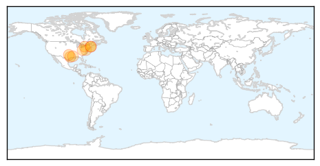
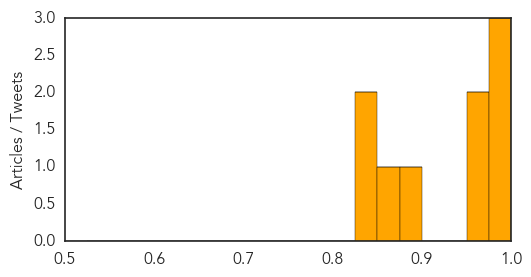
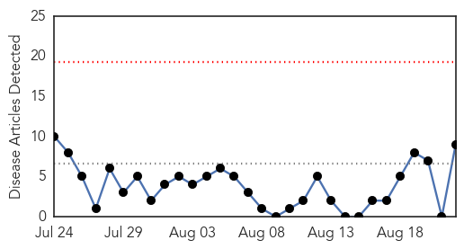
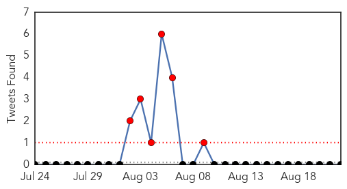
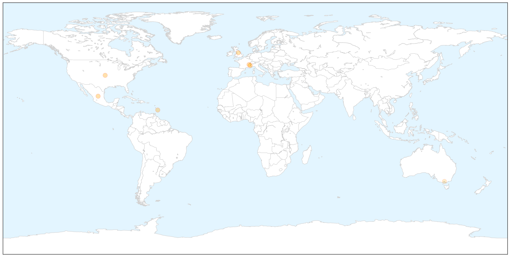

West Nile Virus
30-Day Web Trend
0 alerts, 0 warnings

30-Day Twitter Trend
0 alerts, 0 warnings

Article Locations

Article Confidences
Top Articles:
- 0.996
- Montgomery County to start spraying for West Nile
- 0.992
- West Nile Virus rare in humans, but still demands vigilance
- 0.979
- State’s First Human West Nile Case Confirmed in Middlesex County
- 0.970
- Farmers Branch resident confirmed with neuro-invasive form of West Nile
- 0.963
- 1st human case of West Nile in Mass. this year
- 0.884
- Louisiana health officials confirm 10 new West Nile virus cases
- 0.870
- Delta mosquito efforts not focusing on West Nile
- 0.847
- 5 Human Cases Of West Nile Virus Reported In Idaho
- 0.846
- 2 viruses found in Cabell County mosquito pools
Top Tweets:
-
No tweets found for Aug 22, 2014
Dengue Fever
30-Day Web Trend
0 alerts, 0 warnings

30-Day Twitter Trend
6 alerts, 0 warnings

Article Locations

X

Article Confidences

Top Articles:
- 0.996
- First case of indigenous dengue fever reported in Var, France
- 0.983
- Odisha dengue cases rise to 249
- 0.983
- Is dengue fever coming to Europe?
- 0.979
- Case of Tropical Dengue Fever Recorded in France
- 0.978
- Odisha dengue cases rise to 249
- 0.949
- Europe dengue fever risk revealed
- 0.915
- Will climate change cause a rise in dengue fever?
- 0.687
- Antibiotic concoction death: Probe shows woman was a dengue patient
- 0.620
- Health woes swamp East Timor medics
Top Tweets:
-
No tweets found for Aug 22, 2014